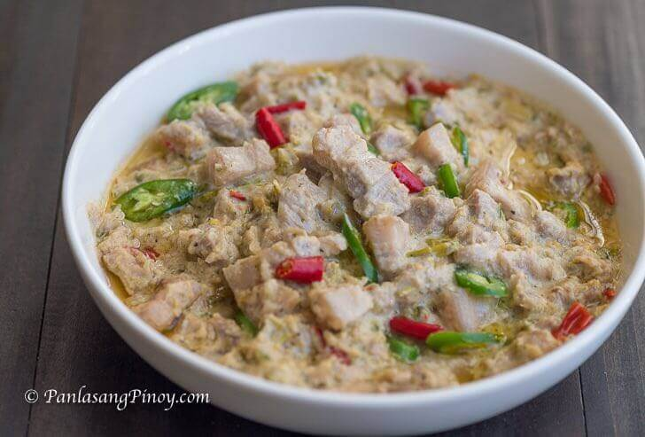

Bicol Express

Description
Bicol Express is a type of Filipino stew that makes use of coconut milk and coconut cream. Traditional Bicol Express recipe involves the use of pork as the main ingredient. These are cooked by boiling in coconut milk along with chili peppers and spices. It is categorized as a main dish and is best eaten with a cup of warm white rice.
Ingredients
- 2 lbs. pork belly sliced into cubes
- 6 pieces siling pansigang slice
- 1 piece Knorr Pork Cube
- 4 cups coconut milk
- 2 cups coconut cream
- 2 pieces onion chopped
- 3 ½ tablespoons balaw or bagoong alamang
- 6 pieces Thai chili pepper chopped
- 3 thumbs ginger crushed
- 5 cloves garlic crushed
Steps
- Combine coconut milk, onion, ginger, garlic, and pork in a cooking pot. Stir. Turn the heat on and let the coconut milk boil. Cover the pot and continue to boil in medium heat until the liquid reduces to half. Note: Stir the mixture every 7 minutes to prevent lumps from forming.
- Add balaw or bagoong alamang, chili peppers, coconut cream, and Knorr pork cube. Stir. Continue to boil until the coconut milk reduces to your desired consistency.
- Transfer to a serving bowl. Serve. Share and enjoy!
Odin Recipes